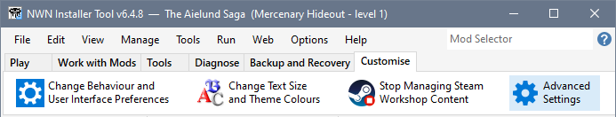
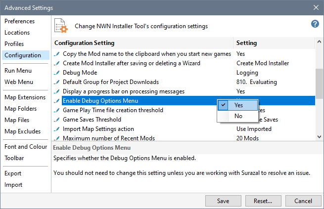
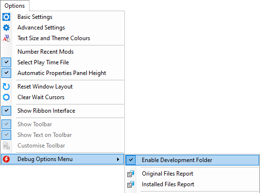
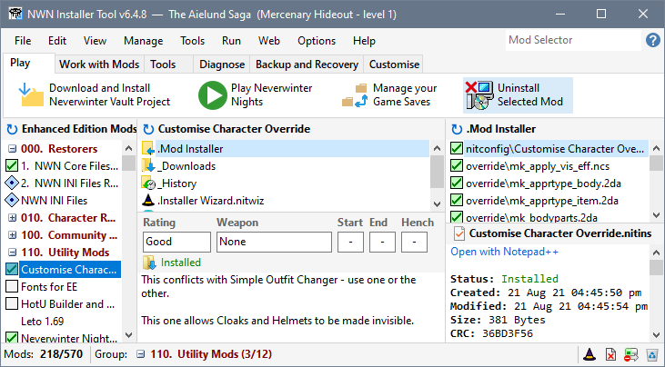
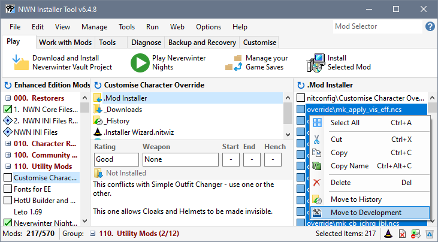
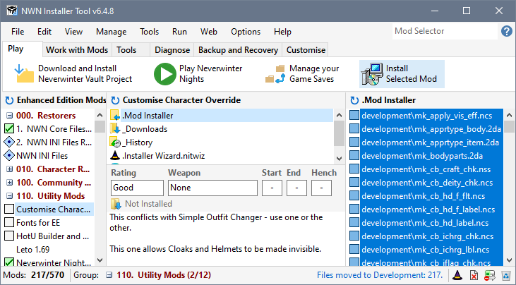

Players having things in their Development folder can break things in many subtle ways and there really is no reason for anyone to use it for anything other than development.
However, there are a few situations where it may be desirable to use to the Development folder...
- Getting Customise Character Override to work with certain Mods such as The Aielund Saga.
- The Mod author provides specific instructions to use the Development folder to apply a hot-fix.
This example illustrates the steps you need to follow to get Customise Character Override (override version only) to work with The Aielund Saga.
- Click Advanced Settings in the Customise tab.

- Enable the Debug Options Menu in the Configuration page and click the Save button.

- Click Options and then Enable Development Folder from the Debug Options Menu.

- Select Customise Character Override in your Mod list and click Uninstall Selected Mod.

- Select all the files in the Override folder, right-click and choose Move to Development.

- You can now install Customise Character Override again to place the files in the Development folder so it can be used while playing The Aielund Saga.

You can reverse the process by uninstalling Customise Character Override, selecting all the Development files and clicking Move to Override from the right-click menu.